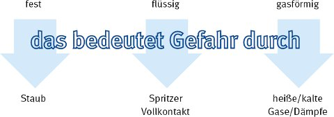

Anhang 1
Auswahlhilfe für Chemikalienschutzkleidung
Die Auswahlhilfe soll dazu dienen, mögliche Gefahren zu erkennen, um CS-Kleidung mit den notwendigen Schutzfunktionen auswählen zu können.
Darüber hinaus können weitere Persönliche Schutzausrüstungen notwendig sein, die dann zur Verfügung gestellt werden müssen. Dies können z.B. Atemschutz, Gehörschutz, Kopfschutz, Handschutz etc. sein.
a) Wo finde ich Informationen?
- Sicherheitsdatenblatt
- Kennzeichnung auf dem Gebinde
- Gutachten/SiGe-Plan (Belastung durch Gefahrstoffe/Biologische Arbeitsstoffe, Schadstoffkataster)
- Herstellerinformation zur CS-Kleidung
- alte Fotos, Rechnungen, Aufträge, Baudaten, ehemalige Nutzer eines Gebäudes, etc.
b) In welcher Form liegen die Gefahrstoffe/biologischen Arbeitsstoffe vor?

- Gibt es einen oder mehrere Gefahrstoffe/biologische Arbeitsstoffe?
- Gibt es eine oder mehrere Quellen?
- Ist die Quelle sichtbar?
c) Welche Bedingungen herrschen am Arbeitsplatz (z.B. Baustelle)?
- Wird der Gefahrstoff in einem geschlossenen oder offenen System/Verfahren verarbeitet?
- Wie erfolgt die Verarbeitung bzw. Entfernung? z.B. Spritzen, Rollen, Streichen, Vergießen, Schaufeln, mit Bagger, Schneiden, Strahlarbeiten, Fräsen, etc.?
- Treten Gefahrstoffe/biologische Arbeitsstoffe örtlich begrenzt auf?
- Ist Abschottung möglich?
- Sind nacheinander Tätigkeiten mit unterschiedlicher Gefährdung auszuführen?
- Erfolgt die Freisetzung des Gefahrstoffes/biologischen Arbeitsstoffes durch die Tätigkeit?
- Wie lange dauert die Tätigkeit und wie häufig pro Schicht ist die Tätigkeit auszuführen?
- Wie viel belastetes Material oder reiner Gefahrstoff wird ver- oder bearbeitet?
- Wie sind die klimatischen Verhältnisse (Temperatur, Feuchte) am Arbeitsplatz?
Sind die Fragen a) bis c) beantwortet, können die notwendigen und die eventuell zusätzlichen Schutzfunktionen der CS-Kleidung nach 1) bis 7) ermittelt werden.
1) Müssen nur Tätigkeiten mit einem Gefahrstoff/biologischen Arbeitsstoff ausgeführt werden? Z.B.
- Desinfektion/Sterilisation?
- nur Tätigkeiten mit Künstlichen Mineralfasern (TRGS 521)?
- nur Tätigkeiten mit Asbest (TRGS 519)?
- Schimmelpilzsanierungen (BGI 858)?
2) Müssen Tätigkeiten mit mehr als einem bekannten Gefahrstoff ausgeführt werden? Z.B.
- Arbeiten in kontaminierten Bereichen (BGR 128, TRGS 524)?
- Entfernung von Bleihaltigen Altbeschichtungen (TRGS 505)?
- Bearbeitung von PAK-haltigen Altbeschichtungen (TRGS 551)?
3) Müssen Tätigkeiten mit biologischen Arbeitsstoffen ausgeführt werden? Z.B.
- bei Kanalreinigungen, Kanalsanierungen (TRBA 220)?
- bei Schimmelpilzsanierungen (BGI 858)?
- bei Entfernung von Taubenkot (BGI 892)?
- bei Abbrucharbeiten?
- bei Deponiesanierungen (BGR 128/TRGS 524)?
- bei der Schädlingsbekämpfung?
- bei der Sanierungsarbeiten an Milzbrandverdachtsstandorten (BGI 583)?
Bei Tätigkeiten mit Infektionsgefährdungen kann eine Desinfektion der CS-Kleidung notwendig sein. Die Nähte der CS-Kleidung müssen bei Gefährdung durch Infektionserreger ggf. abgeklebt sein.
4) Könnten weitere noch unbekannte Gefahrstoffe/biologische Arbeitsstoffe angetroffen werden? Z.B.
- bei Sanierungen in Bereichen bei denen die Vornutzung nicht umfassend bekannt ist?
- wenn schon Teilsanierungen erfolgt sind?
5) Kann zusätzlich eine mechanische Gefährdung vorliegen? Z.B.
- bei Strahlarbeiten (BGR/GUV-R 500)?
- bei Tätigkeiten mit scharfen Gegenständen?
6) Liegt eine zusätzliche Gefährdung durch klimatische Bedingungen am Arbeitsplatz vor? Z.B.
7) Beeinflussen weitere Faktoren die Auswahl der Schutzkleidung? Z.B.
- Passform der Kleidung (Größe, Umfang)?
- Körpererwärmung in nicht klimatisierten Anzügen (Tragezeiten begrenzen, BGR/GUV-R 189 und BGR/GUV-R 190)?
- Allergien gegen Gummi, Silikon, Weichmacher (Bündchen der CS-Kleidung)?
Treten mehrere Gefährdungen auf ist grundsätzlich die CS-Kleidung einzusetzen, die alle Gefährdungen umfasst.
Grundsätzlich sind immer die hygienischen Schutzmaßnahmen nach den jeweils geltenden Vorschriften anzuwenden.
Grundsätzlich können auch immer weitere Arten von Persönlicher Schutzausrüstung notwendig sein, die dann aufeinander abgestimmt sein müssen.